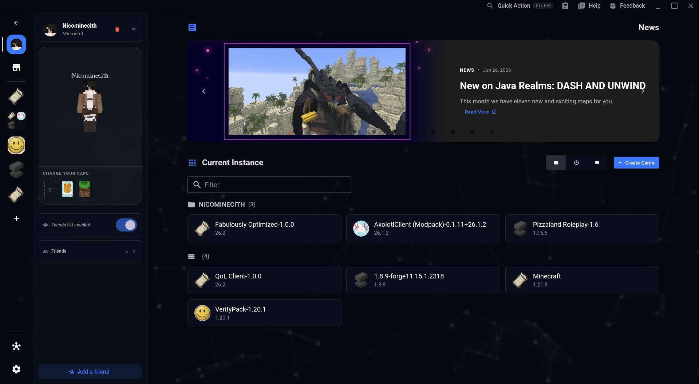

Dein Launcher,
selbst zusammengesetzt.
Ein transparenter, ressourcenschonender Client. Verwalte Modpacks, Instanzen und Profile ohne unnötige Hintergrundprozesse — und ohne etwas glauben zu müssen, das du nicht selbst nachprüfen kannst.
Datei vor dem Öffnen prüfenZentrale Instanzverwaltung
Starte deine bevorzugten Minecraft-Instanzen mit optimierten JVM-Argumenten, direktem Microsoft-Login und aufgeräumter Oberfläche.

Maximale System-Leistung
Minimaler RAM-Verbrauch im Leerlauf und automatisierte GPU-Zuweisung für optimale Bildraten im Spiel.
Integrierte Modpack-Suche
Durchsuche Modrinth und CurseForge direkt im Launcher und installiere Fabric-, Forge- oder NeoForge-Packs mit einem Klick.
Datenschutz & Open Source
Keine Werbenetzwerke, kein Tracking. Der Quellcode ist vollständig auf GitHub einsehbar und auditierbar.
Downloads & Versionen
Verfügbare Installationen für Windows und Linux-Distributionen.
- Integration des Zedix Client Pack Selectors zur schnellen Pack-Auswahl.
- Beschleunigter Startprozess für Java-Instanzen.
- Überarbeitete Benutzeroberfläche mit verbessertem System-DPI-Scaling.
- Erstes stabiles Release mit CurseForge & Modrinth Schnittstelle.
- Discord Rich Presence Status-Anzeige.
Sicherheit & Antivirus
So kannst du selbst überprüfen, dass deine Download-Datei unverändert und vertrauenswürdig ist.
Open Source statt Vertrauensvorschuss
Zedix Launcher ist vollständig quelloffen. Wir behaupten nicht einfach „100 % sicher" – stattdessen bekommst du hier die Werkzeuge, um es selbst zu überprüfen: den Quellcode, unabhängige Virenscans und Prüfsummen für jede Datei. So musst du niemandem blind vertrauen, auch nicht uns.
Quellcode einsehen
Der komplette Code liegt öffentlich auf GitHub. Jeder kann nachvollziehen, was der Launcher tatsächlich tut.
Unabhängige Virenscans
Jede Release-Datei wird vor dem Upload bei VirusTotal geprüft – über 70 Antiviren-Engines gleichzeitig. Ergebnis-Link neben jedem Download.
SHA-256 Prüfsummen
Vergleiche nach dem Download den Hashwert deiner Datei mit dem hier veröffentlichten Wert, um Manipulation auszuschließen.
Nachvollziehbarer Build
Releases werden automatisiert via GitHub Actions direkt aus dem öffentlichen Quellcode gebaut – nicht manuell zusammengestellt.
| Datei | SHA-256 | Scan |
|---|---|---|
| zedix-launcher-1.5.0-setup-Windows.exe | HIER_SHA256_HASH_EINFÜGEN | VT-Link |
| zedix-launcher-1.5.0-amd64-Linux.deb | HIER_SHA256_HASH_EINFÜGEN | VT-Link |
| zedix-launcher-1.5.0-arm64-Linux.deb | HIER_SHA256_HASH_EINFÜGEN | VT-Link |
| zedix-launcher-1.5.0-x86_64-Linux.AppImage | HIER_SHA256_HASH_EINFÜGEN | VT-Link |